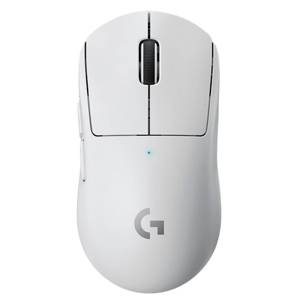

logitech G PRO X SUPERLIGHT
Logitech G PRO X SUPERLIGHT - это высокопроизводительная игровая мышь, созданная для профессиональных геймеров и серьезных энтузиастов. Она весит всего 63 грамма, что делает ее одной из самых легких в своем классе, обеспечивая максимальную скорость и маневренность без лишней нагрузки на руку.
Мышь оснащена передовым оптическим сенсором HERO 25K, который поддерживает разрешение до 25 600 DPI, обеспечивая исключительную точность и отзывчивость в самых требовательных играх. Кроме того, G PRO X SUPERLIGHT предлагает беспроводное соединение через технологию LIGHTSPEED, что гарантирует низкую задержку и высокую производительность, сравнимую с проводными мышами.
Эргономичный дизайн мыши подходит для различных стилей захвата, а ее кнопки имеют продуманную структуру, что обеспечивает комфорт и удобство в использовании. RGB-подсветка добавляет индивидуальности, а программное обеспечение Logitech G HUB позволяет настраивать параметры, включая макросы и чувствительность.
Сочетание легкости, точности и продвинутых технологий делает Logitech G PRO X SUPERLIGHT отличным выбором для тех, кто ищет преимущества в конкуренции и стремится к победе в играх.
